基本移动
回忆上节课内容🤔
- i、I 在前面插入文本
- a、A 在后面插入文本
- o、O 换行插入文本
- o 其实是 A 回车
- O 其实是 k o
- O 也是 k A 回车
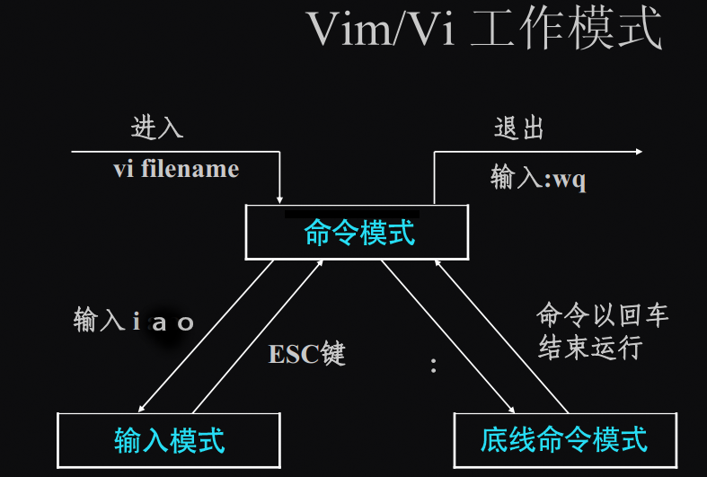
模式切换小技巧
- 比如你在一句话的中间，并处于插入模式，此时你想要写下一行
- 从插入模式到正常模式要用 esc
- 但是 esc 距离基本起手势太遥远了
- 可以用 ctrl + c 来替代
- 左手小拇指 ctrl + c
- 然后 A 回车
- 可这仍然很慢
- 有没有更有效率的方法呢？
插入-普通模式
插入普通模式
- 就是让你执行一次
普通模式 的命令
- 比如插入模式下
- 光标在行中间
- ctrl + o进入插入普通模式
- o
- 然后继续保持在
插入模式
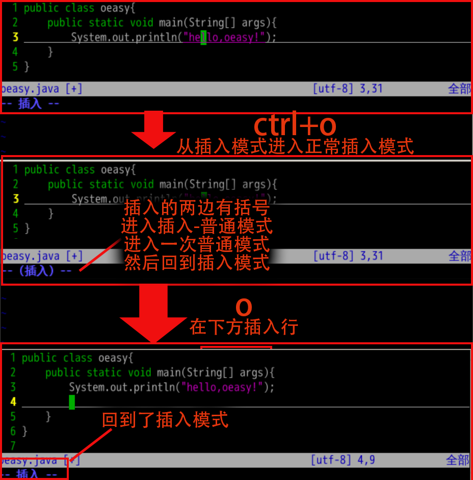
帮助手册
插入普通模式 帮助手册在
:h i_ctrl-o 插入模式i 下的ctrl + o
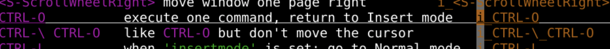
- 比如想保存个文件
- 可以 ctrl + o 进入插入普通模式
- 然后执行 :+w 继续进行插入
- 我们去下载个项目来练习操作
- 去哪下载呢？
github
- 这就要去传说中的github了
- 点击链接https://github.com
- 可以在本地的浏览器中打开
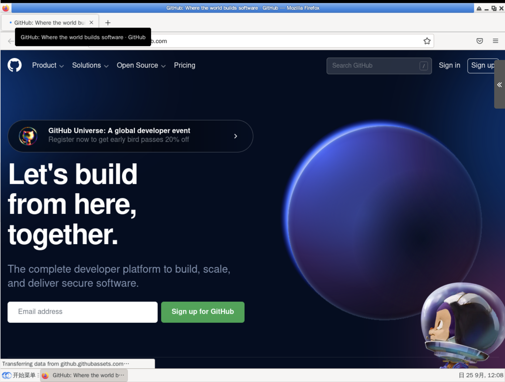
- 这个网站是世界制作软件的地方
- 这里确实有各种各样的源代码
- linux
- python
- blender
- 等等各种开源的仓库都在这里
- 用社交的方式开发和迭代
- 值得注册(signup)和深度使用
- 注意蓝桥云系统中不能访问邮箱
- 需要在本地得到邮箱验证码
- 那oeasy的python教程的代码在哪呢？
搜索
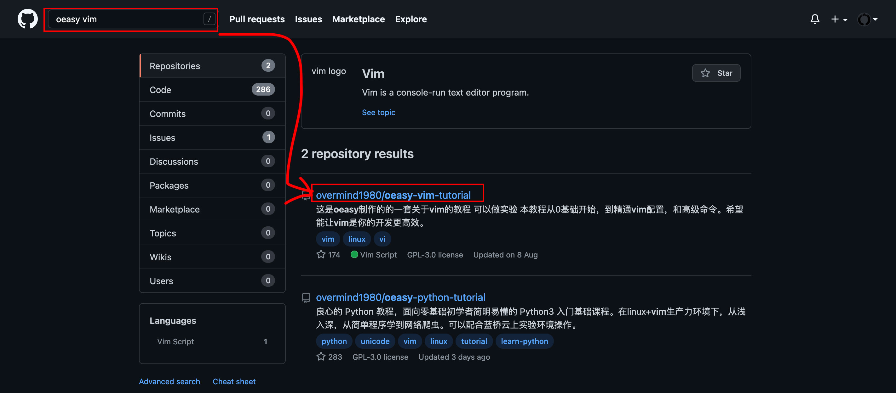
仓库细节
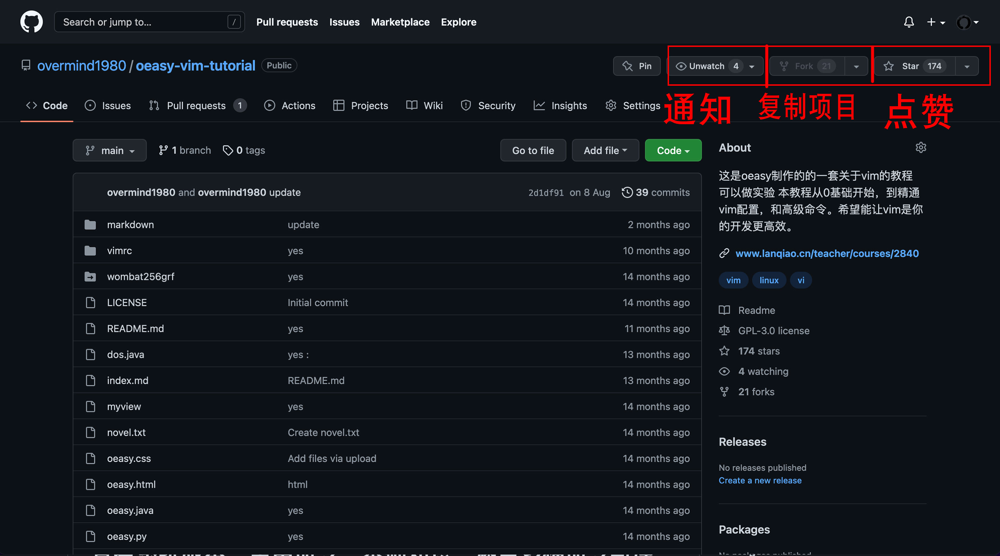
- star 点赞
- 为项目点赞
- 用实际行动支持这个项目
- 期待着您为oeasy点个⭐️
- 这样也便于再次找到
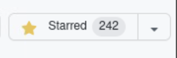
fork
- fork 复制项目
- 把当前这个项目复制到自己的项目库中
- 这样更容易找到
- 在当前项目基础上可以做修改做出自己项目
- 也可以反哺(pull-request)源项目
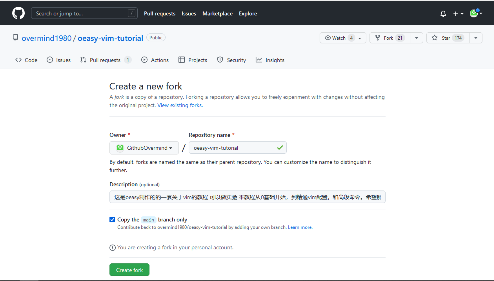
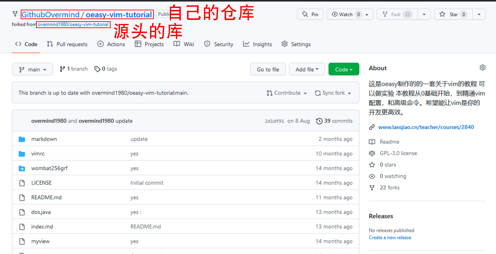
- 点击绿色按钮可以生成自己的仓库
- watch按钮表示什么呢？
watch
- watch 观察
- 就是你对这个项目有疯狂的兴趣
- 这个项目的一举一动你都要接到通知
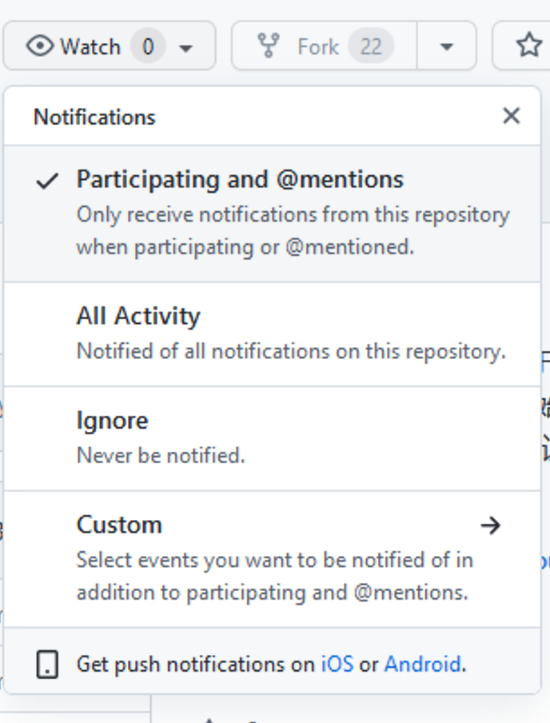
-
可以选择通知级别
- Paricipating and @mentions
- All Activity
- Ignore
- Custom
-
这个项目具体怎么下载呢？
下载项目
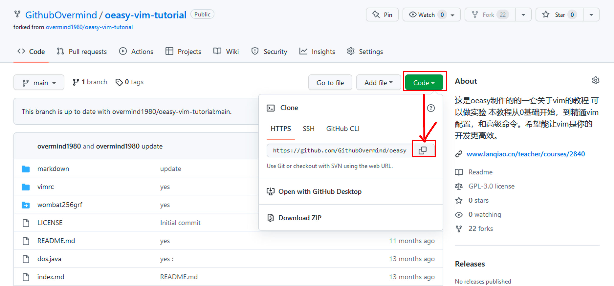
粘贴
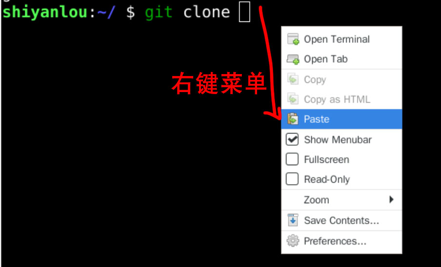
- 然后鼠标右键调出菜单
- 点击终端菜单的Paste命令
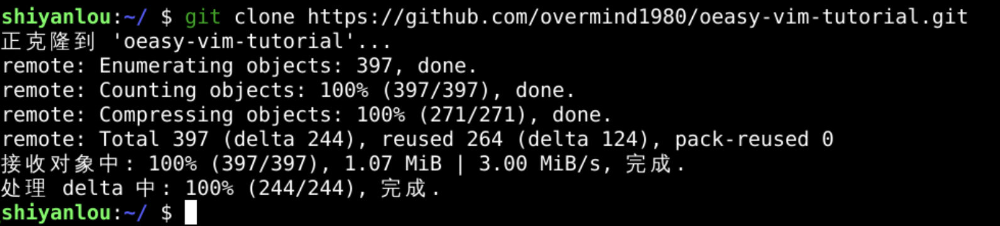
- 回车运行
- 如果不能下载
- 可以ctrl+c取消
- 反复多试几次
- 如果还不行的话
设置git
- 也许是缓冲区不足造成的
- 可以对git的缓冲区进行设置
git config --global http.postBuffer 524288000
git clone [项目链接] --depth 1
进入目录
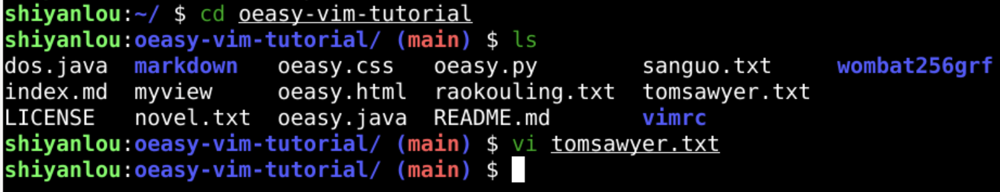
cd oeasy-vim-tutorial
vi tomsawyer.txt
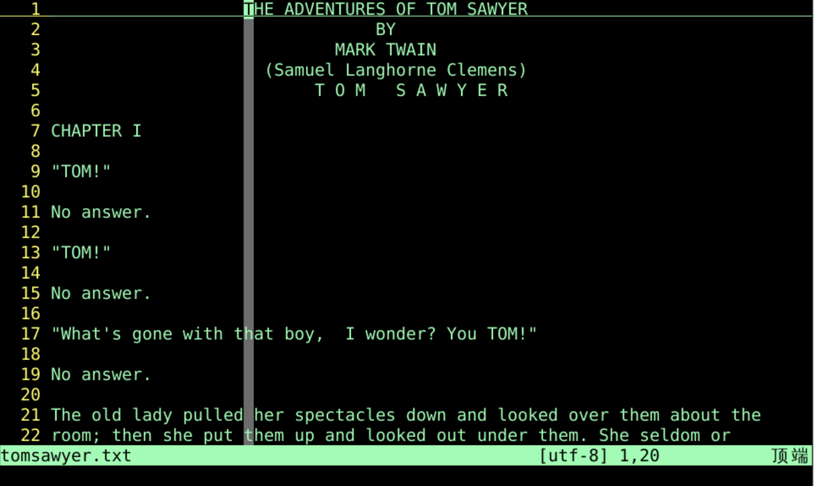
命令分布
我们首先看看正常模式下的命令键盘图
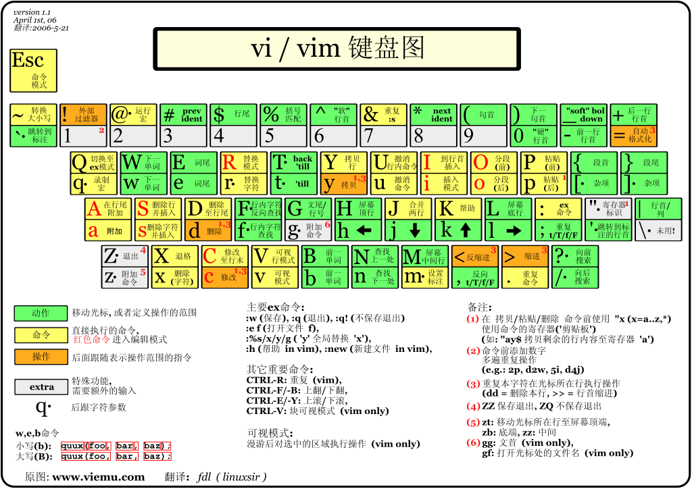
- 基本上个按键都有对应的命令
- 命令可以分为大写和小写两种
iao 进入插入模式（已经解锁）hjkl 进行移动（已经解锁）
起手势
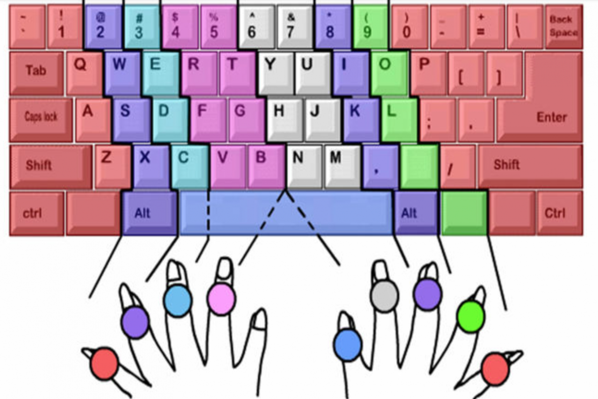
- 记不住命令怎么办？
- 淘宝可以搜索 vim 的键盘膜或者贴纸
- 但我感觉没用
- 还得靠自己熟练之后自然记忆
- 左手食指放在f
- 右手食指放在j
- 不管是游泳、弹琴、跑步还是打乒乓球
- 正确的基本姿势会减少运动伤害
- 让你的上限更高
- 肌肉记忆沉淀下来，逐渐变为某些标准
- 这些标准是每个新手都要遵循的
- 这可不是简单的循规蹈矩
- 而是体会着前人的智慧和经验
- 这会让你后期更厉害
移动命令
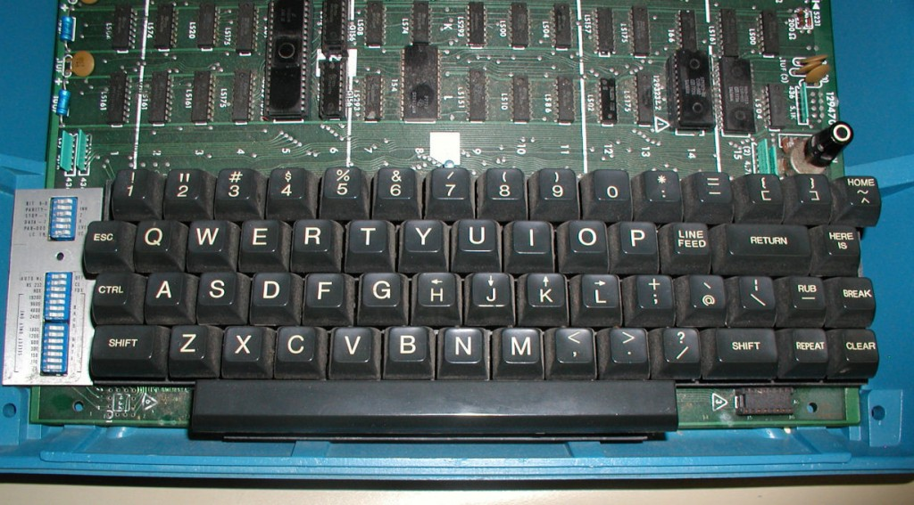
- 起手势是盲打的基本姿势
- 手轻轻放在中间那行上方一点点
- 我们知道由于历史的原因
hjkl 对应着移动的命令
- 正常模式下
- 有必要把右手四指基本位从
jkl; 移动到 hjkl 吗？
保持起手势
- 我认为没有必要改变盲打姿势
hjkl 右手默认位使用概率非常大- 保持指尖的敏感性
- 手指会比眼睛更早知道打错字了
- 还有更多神奇的移动命令等待你来解锁
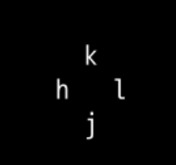
强制起手式
-
在前面添加上四句
map <Left> <Nop>map <Right> <Nop>map <Up> <Nop>map <Down> <Nop>
-
map是按键映射
- 我们把上下左右方向键映射为
<Nop>空
- 就是什么也不做
- 保存并关闭vim
- 然后我们发现上下左右方向键都不好用了
总结
- 我们这次强化了起手势
- 回忆了基本的移动方式
hjkl
- 除
hjkl 外,还有什么移动命令效率更高吗？
- 我们下次再说！👋